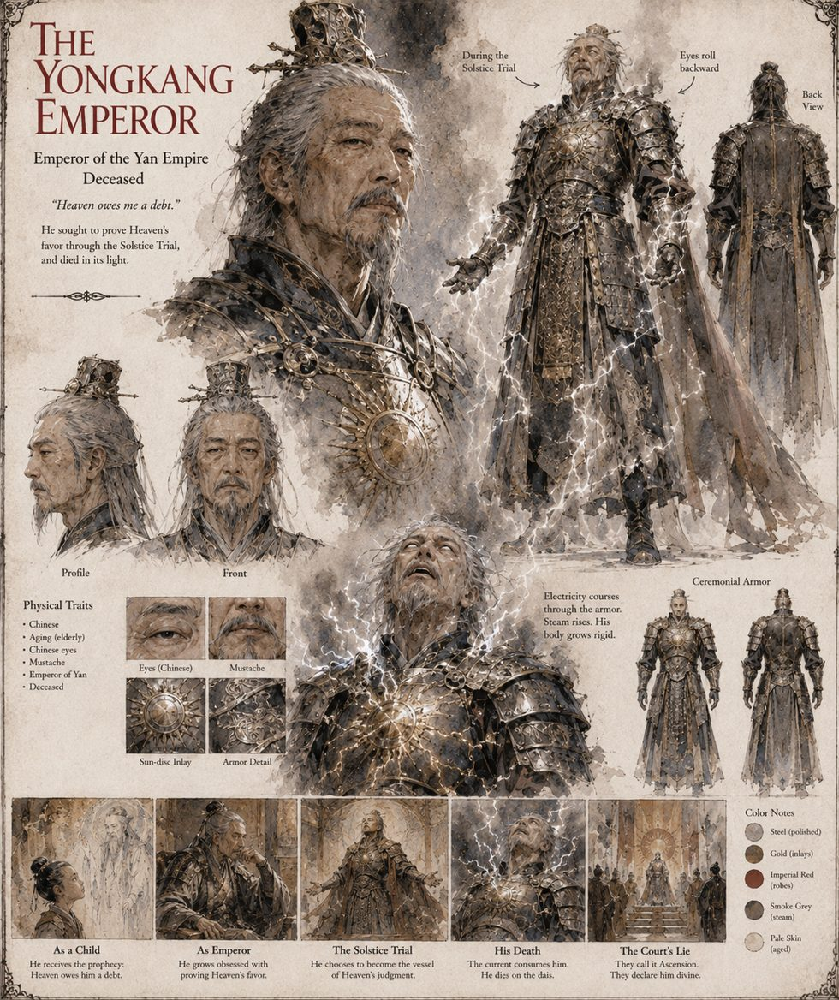

The Yongkang Emperor
Emperor of Yan · ninth year of his reign · Deceased
Nine years into a reign built on nine generations of everyone agreeing not to test whether the Mandate still applied, with a salt-marsh warlord quietly keeping his tribute and a western general calling him “the old man in the Jade Hall” in private letters the Ministry of Rites intercepted and wished it had not. At nine years old, in the year his own father nearly lost the throne to a coalition of uncles, a wandering Daoist read his birth chart at his mother's frightened insistence and named a fate: the Mark of the Unclosed Ledger, in which Heaven itself owes the child a debt that will come due, in full, exactly once, at a moment of the boy's own choosing. His mother repeated it to him until he could not separate it from the fact of surviving.
He does not, strictly, believe the eel is a dragon. He needs three provinces to believe the water is holy, by the only method they have ever found persuasive: watching a man risk everything and either die or not. He remembers Master Bai's singed beard, in the small hours before his own Trial, as evidence rather than warning. The night before, he summons no minister, only his granddaughter Wan-er, who tries on his gauntlets, three sizes too large, while he tells her about the carp that swam upstream until it became a dragon. Two days later the court records that he ascended to the Nine Heavens, his body received rather than killed.
“Heaven owes me a debt.”
Appears in The Heavenly Thunder-Serpent